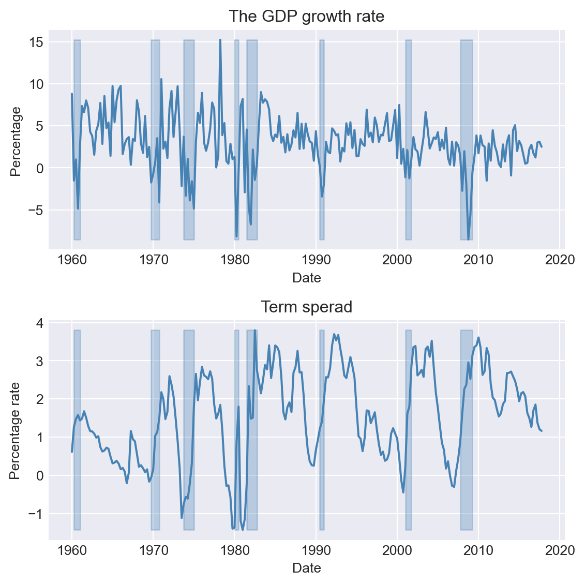
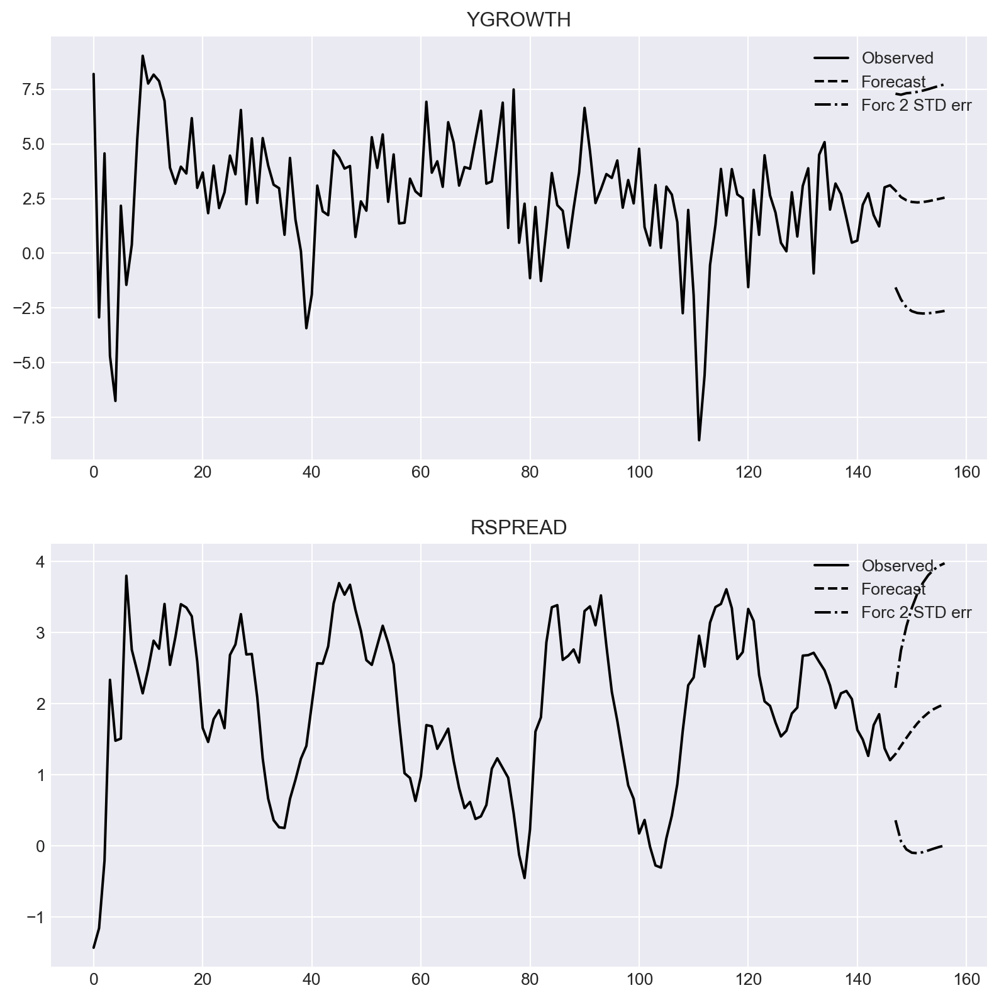
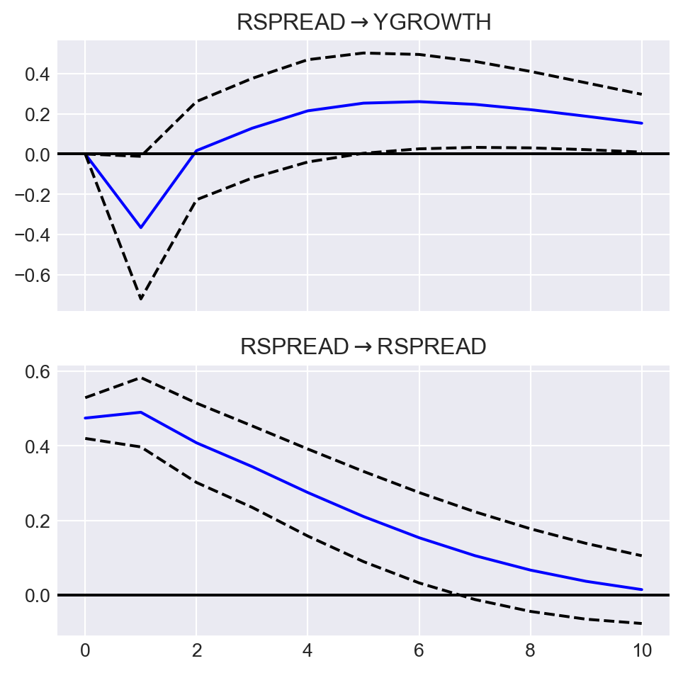
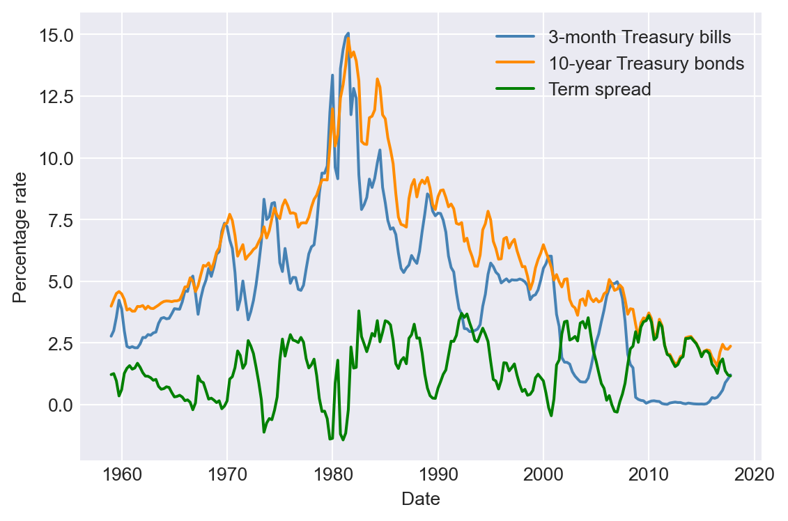
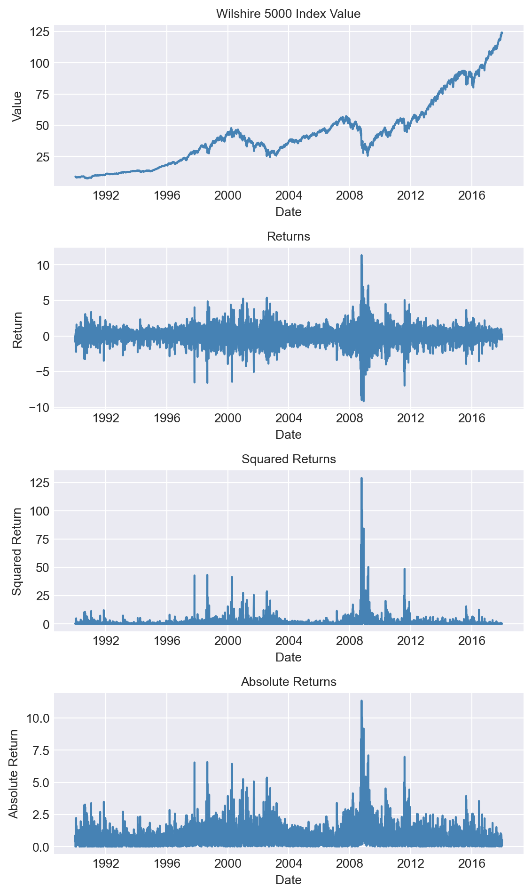
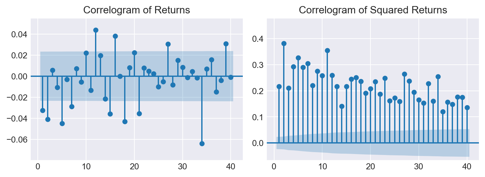
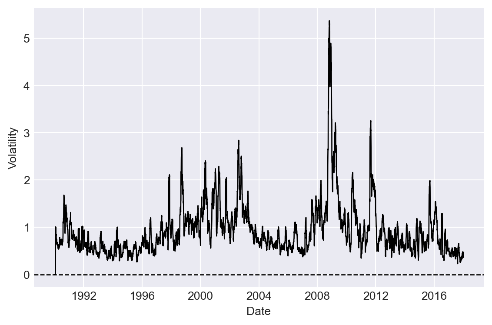
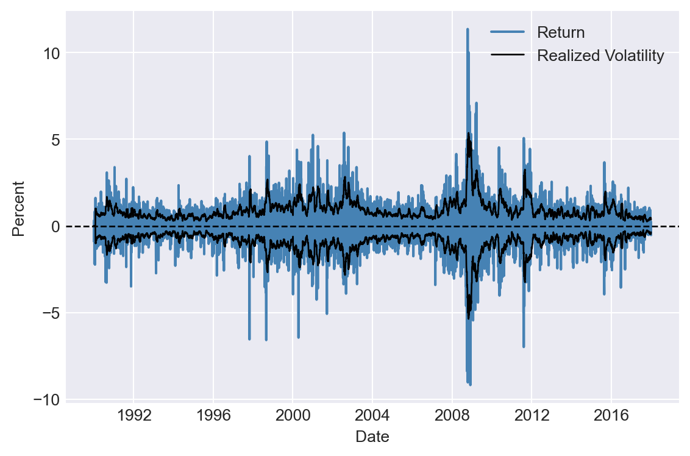
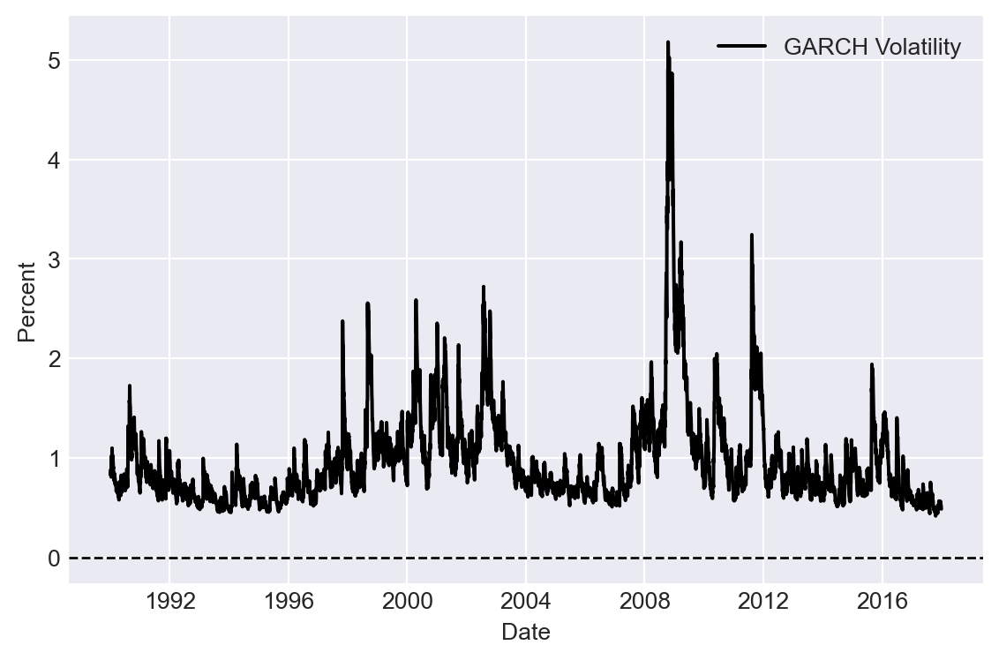
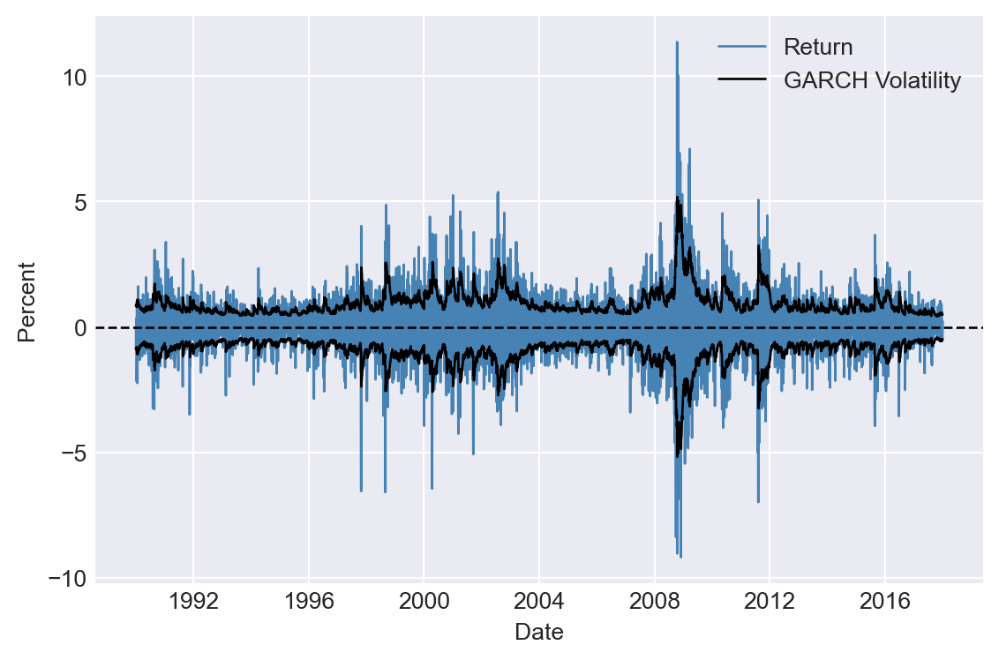

import numpy as np
import pandas as pd
import pandas_datareader as pdr
import statsmodels.tsa.stattools as stt
import statsmodels.api as sm
import statsmodels.formula.api as smf
from statsmodels.iolib.summary2 import summary_col
from statsmodels.tsa.api import VAR
from statsmodels.tsa.vector_ar.vecm import VECM
from statsmodels.tsa.vector_ar.vecm import coint_johansen
from statsmodels.stats.diagnostic import acorr_ljungbox
from scipy import stats
import matplotlib.pyplot as plt
from arch import arch_model
#plt.style.use('ggplot')
plt.style.use('seaborn-v0_8-darkgrid')26 Additional Topics in Time Series Regression
26.1 Introduction
In this chapter, we consider some selected topics in time series analysis. We cover vector autoregression (VAR), multi-period forecasting, cointegration and error correction models, volatility clustering, and autoregressive conditional heteroskedasticity models.
26.2 Vector Autoregressions
26.2.1 VAR models
VARs are introduced by Sims (1980). A VAR model is a generalization of the univariate ADL model to multiple time series. The VAR model for \(k\) variables is a set of \(k\) ADL models that are estimated simultaneously. If the number of lags is \(p\) in each equation in the VAR model, the model is called a VAR(\(p\)) model. For example, in the case of two variables \(Y_t\) and \(X_t\), the VAR(\(p\)) model is given by \[ \begin{align*} Y_t &= \beta_{10}+\beta_{11}Y_{t-1}+\beta_{12}Y_{t-2}+\cdots+\beta_{1p}Y_{t-p}+\gamma_{11}X_{t-1}+\cdots+\gamma_{1p}X_{t-p}+u_{1t},\\ X_t &= \beta_{20}+\beta_{21}Y_{t-1}+\beta_{22}Y_{t-2}+\cdots+\beta_{2p}Y_{t-p}+\gamma_{21}X_{t-1}+\cdots+\gamma_{2p}X_{t-p}+u_{2t}, \end{align*} \tag{26.1}\] where \(\beta\)’s and \(\gamma\)’s are unknown parameters, and \(u_{1t}\) and \(u_{2t}\) are the error terms.
Using matrix notation, we can express the two-variable VAR(\(p\)) as \[ \begin{align*} & \begin{pmatrix} Y_t\\ X_t \end{pmatrix} = \begin{pmatrix} \beta_{10}\\ \beta_{20} \end{pmatrix} + \begin{pmatrix} \beta_{11}&\gamma_{11}\\ \beta_{21}&\gamma_{21} \end{pmatrix} \times \begin{pmatrix} Y_{t-1}\\ X_{t-1} \end{pmatrix} +\ldots+ \begin{pmatrix} \beta_{1p}&\gamma_{1p}\\ \beta_{2p}&\gamma_{2p} \end{pmatrix} \times \begin{pmatrix} Y_{t-p}\\ X_{t-p} \end{pmatrix} + \begin{pmatrix} u_{1t}\\ u_{2t} \end{pmatrix}. \end{align*} \]
Then, we can express the model with the following compact form: \[ \begin{align} \bs{Y}_t=\bs{B}_0+\bs{B}_1\bs{Y}_{t-1}+\ldots+\bs{B}_{p}\bs{Y}_{t-p}+\bs{u}_t, \end{align} \tag{26.2}\] where \[ \begin{align*} \bs{Y}_t= \begin{pmatrix} Y_t\\ X_t \end{pmatrix},\, \bs{B}_0= \begin{pmatrix} \beta_{10}\\ \beta_{20} \end{pmatrix},\, \bs{B}_j= \begin{pmatrix} \beta_{1j}&\gamma_{1j}\\ \beta_{2j}&\gamma_{2j} \end{pmatrix},\,\text{and}\, \bs{u}_t= \begin{pmatrix} u_{1t}\\ u_{2t} \end{pmatrix}, \end{align*} \] for \(j=1,2,\ldots,p\).
The VAR(\(p\)) in Equation 26.2 is called the reduced-form VAR(\(p\)) or the VAR(\(p\)) in standard form.
We can use the OLS estimator to estimate each equation in a VAR model. The assumptions required for estimating the VAR model are the same as those outlined in Section 24.8 for the ADL model. In particular, each variable in the model must be stationary. In large samples, the OLS estimator is consistent and asymptotically normal. Consequently, inference can be conducted as in a multiple regression model.
26.2.2 Granger causality
The structure of the VAR model reveals how a variable or a group of variables can help predict or forecast others. The following intuitive notion of prediction ability is due to Granger (1969) and Sims (1972).
Definition 26.1 (Granger Causality) If \(Y_t\) improves the prediction of \(X_t\), then \(Y_t\) is said to Granger-cause \(X_t\); otherwise, it is said to fail to Granger-cause \(X_t\).
We note that this notion of Granger causality does not correspond to the concept of causality defined in Chapter 22. Instead, it only reflects the predictive ability of variables. In our two-variable VAR model, we can test for whether \(Y_t\) Granger causes \(X_t\) by formulating the following null and alternative hypotheses: \[ \begin{align*} &H_0:\beta_{21}=\beta_{22}=\ldots=\beta_{2p}=0,\\ &H_1:\text{At least one parameter is not zero}. \end{align*} \] We can resort to the \(F\)-statistic to test the null hypothesis.
26.2.3 Model formulation
When formulating a VAR model, we usually face the following issues:
- How many variables should be included in the model?
- What is the appropriate number of lags to include in the model?
- Which variables should be included in the model?
Although the modeling process depends on the specific research question and available data, Stock and Watson (2020) provide a general guideline for formulating a VAR model. For the first and second questions, we need to note that the number of parameters to estimate increases with both the number of VAR variables and the number of lags. For example, in a VAR(\(2\)) model with two variables, there are 10 parameters to estimate, whereas in a VAR(\(2\)) model with three variables, this number increases to 18. If the sample size is small and the number of parameters is large, the OLS estimator may not accurately estimate all parameters. Therefore, when using the OLS estimator, the number of VAR variables should be kept small so that the number of parameters remains relatively low compared to the sample size.
To determine the number of lags, we can use information criteria. Specifically, we consider the Bayesian Information Criterion (BIC) and the Akaike Information Criterion (AIC), which are defined as follows: \[ \begin{align} &\text{BIC}(p)=\ln\left(\text{det}(\hat{\Sigma}_u)\right)+k(kp+1)\ln(T)/T,\\ &\text{AIC}(p)=\ln\left(\text{det}(\hat{\Sigma}_u)\right)+2k(kp+1)/T, \end{align} \] where \(k\) is the number of VAR variables, \(\text{det}(\hat{\Sigma}_u)\) is the determinant of \(\hat{\Sigma}_u\), and \(\hat{\Sigma}_u\) is the estimated covariance matrix of the VAR error terms. The \((i,j)\)th element of \(\hat{\Sigma}_u\) is \(\frac{1}{T}\sum_{t=1}^T\hat{u}_{it}\hat{u}_{jt}\), where \(\hat{u}_{it}\) is the OLS residuals from the \(i\)th equation and \(\hat{u}_{jt}\) is the OLS residuals from the \(j\)th equation. We can then test a set of candidate values for \(p\) and choose the one that minimizes BIC(\(p\)) or AIC(\(p\)).
For the third question, we should use economic theory to select VAR variables that are related to each other so they can effectively predict and forecast one another. We can apply the Granger causality test and include variables that Granger-cause each other. Including variables that do not Granger-cause each other can introduce estimation errors, thereby reducing the model’s forecasting ability.
26.2.4 Structural VAR models
So far, we have only considered using VAR models for prediction and forecasting. However, VAR models can also be used to study causal relationships among the VAR variables. This type of VAR model is called a structural VAR model (SVAR). SVAR models are typically used to analyze the dynamic effects of a structural shock in one variable on the other VAR variables. These models require assumptions to specify which VAR variables are exogenous. For further discussion on SVAR models, see Lütkepohl (2005) and Hansen (2022).
26.2.5 An empirical application
In this section, we consider a VAR(\(2\)) model for the GDP growth rate (GDPGR) and the term spread (TSpread) for the U.S. economy. The model takes the following form: \[
\begin{align*}
&\text{GDPGR}_t=\beta_{10}+\beta_{11}\text{GDPGR}_{t-1}+
\beta_{12}\text{GDPGR}_{t-2}+\gamma_{11}\text{TSpread}_{t-1}+\gamma_{12}\text{TSpread}_{t-2}+u_{1t},\\
&\text{TSpread}_t=\beta_{20}+\beta_{21}\text{GDPGR}_{t-1}+
\beta_{22}\text{GDPGR}_{t-2}+\gamma_{21}\text{TSpread}_{t-1}+\gamma_{22}\text{TSpread}_{t-2}+u_{2t}.
\end{align*}
\] The GDGGR variable is contained in the GrowthRate.csv file, and the TSpread variable is available in the TermSpread.csv file. The GrowthRate.csv file contains data on the following variables:
Y: Logarithm of real GDPYGROWTH: Annual real GDP growth rateRECESSION: Recession indicator (1 if recession, 0 otherwise)
# Load the GrowthRate data
dfGrowth = pd.read_excel('data/GrowthRate.xlsx', header = 0)
dfGrowth.index = pd.date_range(start = '1960', periods = len(dfGrowth), freq = 'QS')
dfGrowth.columnsIndex(['Period', 'Y', 'YGROWTH', 'RECESSION'], dtype='object')The TermSpread.csv file includes data on the following variables:
GS10: Interest rate on 10-year US Treasury bondsTB3MS: Interest rate on 3-month Treasury billsRSPREAD: Term-spread (GS10-TB3MS)RECESSION: Dummy variable specifying the recession periods.
# Load the TermSpread data
dfTermSpread = pd.read_csv('data/TermSpread.csv', header = 0)
dfTermSpread.index = pd.date_range(start = '1960-01-01', periods = len(dfTermSpread), freq = 'QS')
dfTermSpread.columnsIndex(['Period', 'GS10', 'TB3MS', 'RSPREAD', 'RECESSION'], dtype='object')In the following code chunk, we merge the two datasets into a single dataset and plot the GDP growth rate and the term spread. The shaded areas in Figure 26.1 indicate the recession periods.
# Merge the data
mydata = pd.merge(dfGrowth, dfTermSpread, left_index=True, right_index=True)
mydata.columnsIndex(['Period_x', 'Y', 'YGROWTH', 'RECESSION_x', 'Period_y', 'GS10', 'TB3MS',
'RSPREAD', 'RECESSION_y'],
dtype='object')# Plots of the GDP growth rate and the term spread
# Create a figure and a set of subplots
fig, axes = plt.subplots(2, 1, figsize=(6, 6))
# Plot GDP growth rate
axes[0].plot(mydata.index, mydata['YGROWTH'], linestyle='-', color='steelblue')
axes[0].fill_between(mydata.index, mydata['YGROWTH'].min(), mydata['YGROWTH'].max(), where=mydata['RECESSION_x'] == 1, color='steelblue', alpha=0.3)
axes[0].set_title('The GDP growth rate', fontsize=12)
axes[0].set_xlabel('Date', fontsize=10)
axes[0].set_ylabel('Percentage', fontsize=10)
# Plot term spread
axes[1].plot(mydata.index, mydata['RSPREAD'], linestyle='-', color='steelblue')
axes[1].fill_between(mydata.index, mydata['RSPREAD'].min(), mydata['RSPREAD'].max(), where=mydata['RECESSION_y'] == 1, color='steelblue', alpha=0.3)
axes[1].set_title('Term sperad', fontsize=12)
axes[1].set_xlabel('Date', fontsize=10)
axes[1].set_ylabel('Percentage rate', fontsize=10)
plt.tight_layout()
plt.show()
Although our model is a VAR(\(2\)) model, we can check whether the information criteria return the same number of lags. In the following code chunk, we first use the VAR() function to create the VAR model. The select_order method is then used to determine the number of lags selected by the information criteria. The results indicate that all information criteria suggest 2 lags.
# Fit the VAR model
varData = mydata.loc["1981-01-01":"2017-07-01", ['YGROWTH', 'RSPREAD']]
model = VAR(varData)
lag_selection = model.select_order(maxlags=4)
print(lag_selection.summary()) VAR Order Selection (* highlights the minimums)
=================================================
AIC BIC FPE HQIC
-------------------------------------------------
0 2.026 2.067 7.583 2.043
1 0.1576 0.2819 1.171 0.2081
2 0.03941* 0.2466* 1.040* 0.1236*
3 0.09017 0.3802 1.095 0.2080
4 0.08419 0.4571 1.088 0.2357
-------------------------------------------------We then use the fit method to estimate the VAR model with 2 lags. The summary method provides an overview of the estimation results. In the YGROWTH equation, all estimated coefficients are statistically significant at the 5% level, indicating that the GDP growth rate can be forecasted using its own lagged values and the lagged values of the term spread. In the RSPREAD equation, except for the first lag of YGROWTH, all other estimated coefficients are statistically significant at the 5% level.
# Fitting VAR model with lag = 2
var_model = model.fit(2)
print(var_model.summary()) Summary of Regression Results
==================================
Model: VAR
Method: OLS
Date: Sat, 11, Oct, 2025
Time: 11:33:37
--------------------------------------------------------------------
No. of Equations: 2.00000 BIC: 0.411289
Nobs: 145.000 HQIC: 0.289414
Log likelihood: -416.427 FPE: 1.22882
AIC: 0.205997 Det(Omega_mle): 1.14826
--------------------------------------------------------------------
Results for equation YGROWTH
=============================================================================
coefficient std. error t-stat prob
-----------------------------------------------------------------------------
const 0.657218 0.438072 1.500 0.134
L1.YGROWTH 0.308418 0.077134 3.998 0.000
L1.RSPREAD -0.769696 0.377682 -2.038 0.042
L2.YGROWTH 0.236256 0.075283 3.138 0.002
L2.RSPREAD 1.067869 0.368206 2.900 0.004
=============================================================================
Results for equation RSPREAD
=============================================================================
coefficient std. error t-stat prob
-----------------------------------------------------------------------------
const 0.453425 0.092181 4.919 0.000
L1.YGROWTH 0.010153 0.016231 0.626 0.532
L1.RSPREAD 1.032801 0.079474 12.996 0.000
L2.YGROWTH -0.054725 0.015841 -3.455 0.001
L2.RSPREAD -0.198748 0.077480 -2.565 0.010
=============================================================================
Correlation matrix of residuals
YGROWTH RSPREAD
YGROWTH 1.000000 0.047020
RSPREAD 0.047020 1.000000
Although all information criteria suggest two lags, we can still use autocorrelation tests to check whether there is any remaining correlation in the error terms. In the following code chunk, we use the Ljung-Box test to check for serial correlation in the residuals. The results show that there is no serial correlation in the residuals.
# Checking for serial correlation in the residuals: YGROWTH
ljungbox_results = acorr_ljungbox(var_model.resid['YGROWTH'], lags=[4], return_df=True)
print(ljungbox_results) lb_stat lb_pvalue
4 0.743437 0.945866# Checking for serial correlation in the residuals: RSPREAD
ljungbox_results = acorr_ljungbox(var_model.resid['RSPREAD'], lags=[4], return_df=True)
print(ljungbox_results) lb_stat lb_pvalue
4 3.492352 0.479042In the following code chunk, we use the test_whiteness method, which provides a portmanteau test for testing the overall significance of the residual autocorrelations up to the fourth lag. The results show that there is no serial correlation in the residuals.
# Overall significance of the residual autocorrelations up to the fourth lag
var_model.test_whiteness(nlags=4).summary()| Test statistic | Critical value | p-value | df |
| 7.795 | 15.51 | 0.454 | 8 |
Thus, both acos_ljungbox() and test_whiteness() tests indicate that there is no serial correlation in the residuals, suggesting that two lags are sufficient to capture the dynamics of the GDP growth rate and the term spread.
Next, to determine whether TSpread Granger-causes GDPGR, we use the \(F\)-statistic for the following null and alternative hypotheses: \[
\begin{align}
&H_0: \gamma_{11}=\gamma_{12}=0,\\
&H_1:\,\,\text{At least one parameter is different from zero}.
\end{align}
\]
This test is conducted using the test_causality method in the following code chunk. The results show that the null hypothesis is rejected, indicating that TSpread Granger-causes GDPGR.
gtest = var_model.test_causality('YGROWTH', ['RSPREAD'], kind='f')
print(gtest.summary())Granger causality F-test. H_0: RSPREAD does not Granger-cause YGROWTH. Conclusion: reject H_0 at 5% significance level.
==============================================
Test statistic Critical value p-value df
----------------------------------------------
4.884 3.028 0.008 (2, 280)
----------------------------------------------We can use the forecast method to forecast the GDP growth rate and the term spread for the next 10 periods. The forecasted values are plotted in Figure 26.2.
# Forecasting
forecast = var_model.forecast(varData.values[-2:], steps=10)
forecast = pd.DataFrame(forecast, columns=['GDPGR', 'TSpread'], index=pd.date_range(start='2017-10-01', periods=10, freq='QS'))# Forecast of the GDP growth rate and the term spread
forecast| GDPGR | TSpread | |
|---|---|---|
| 2017-10-01 | 2.865346 | 1.293331 |
| 2018-01-01 | 2.568107 | 1.408409 |
| 2018-04-01 | 2.423284 | 1.520251 |
| 2018-07-01 | 2.345198 | 1.627686 |
| 2018-10-01 | 2.323640 | 1.723549 |
| 2019-01-01 | 2.339484 | 1.805258 |
| 2019-04-01 | 2.378755 | 1.871935 |
| 2019-07-01 | 2.430543 | 1.924092 |
| 2019-10-01 | 2.486852 | 1.963084 |
| 2020-01-01 | 2.542138 | 1.990726 |
# Forecast of the GDP growth rate and the term spread
fig = var_model.plot_forecast(10)
#fig.set_size_inches(8, 4)
plt.show()
Finally, we consider the effect of a shock in the term spread on the GDP growth rate. Suppose that we are willing to assume that GDPGR has a contemporaneous effect on TSpread but TSpread affects the GDPGR sequence with a one-period lag. To impose such an assumption, we need to order the variable such that GDPGR is the first column in varData (which is the case). That is, the order of variables in the system is important, and the variable that has the contemporaneous effect should be the first variable in the system.
The effect of a shock in TSpread on GDPGR can be analysed through the impulse-response analysis. To that end, we can use the irf method. The response function of GDPGR is plotted in Figure 26.3. The plot shows that a shock in the term spread has a negative effect on the GDP growth rate in the first period.
# Impulse response analysis
irf = var_model.irf(10)
fig = irf.plot(orth=True, impulse='RSPREAD', figsize=(5, 5))
fig.suptitle(None)
plt.show()
26.3 Multi-period forecasts
In this section, we discuss two forecasting methods for generating multi-period forecasts: the iterated method and the direct method. In the iterated method, we first forecast the next period’s value and then use this forecast to predict the value for the subsequent period. This process is repeated until the desired forecast horizon is reached. For example, the one-period, two-period, and three-period-ahead iterated forecasts based on an AR(\(p\)) model are computed as follows: \[ \begin{align*} &\hat{Y}_{T+1|T}=\hat{\beta}_0+\hat{\beta}_1Y_{T}+\hat{\beta}_2Y_{T-1}+\hat{\beta}_3Y_{T-2}+\ldots+\hat{\beta}_pY_{T-p+1},\\ &\hat{Y}_{T+2|T}=\hat{\beta}_0+\hat{\beta}_1{\color{steelblue} \hat{Y}_{T+1|T}}+\hat{\beta}_2Y_T+\hat{\beta}_3Y_{T-1}+\ldots+\hat{\beta}_pY_{T-p+2},\\ &\hat{Y}_{T+3|T}=\hat{\beta}_0+\hat{\beta}_1{\color{steelblue}\hat{Y}_{T+2|T}}+\hat{\beta}_2{\color{steelblue}\hat{Y}_{T+1|T}} +\hat{\beta}_3Y_{T}+\ldots+\hat{\beta}_pY_{T-p+3}, \end{align*} \] where the \(\hat{\beta}\)’s are the OLS estimates of the AR(\(p\)) coefficients. Note that we use the forecast \(\hat{Y}_{T+1|T}\) to compute the two-step-ahead forecast and the forecasts \(\hat{Y}_{T+1|T}\) and \(\hat{Y}_{T+2|T}\) to compute the three-step-ahead forecast. We can continue this process (iterating) to produce forecasts further into the future.
Using the same approach, we can also generate multi-period forecasts for VAR models. We need to first compute the one-step ahead forecast for all variables in the VAR model. Then, we use these forecasts to generate the two-step ahead forecast, and so on. For example, in our two-variable VAR(\(p\)) model in Equation 26.1, the two-step ahead forecast for \(Y_t\) is \[ \begin{align*} \hat{Y}_{T+2|T}&= \hat{\beta}_{10}+\hat{\beta}_{11}\hat{Y}_{T+1|T}+\hat{\beta}_{12}Y_{T}+\cdots+\hat{\beta}_{1p}Y_{T+2-p}\\ &+\hat{\gamma}_{11}\hat{X}_{T+1|T}+\hat{\gamma}_{12}X_T+\cdots+\hat{\gamma}_{1p}X_{T+2-p}, \end{align*} \] where \(\hat{Y}_{T+1|T}\) and \(\hat{X}_{T+1|T}\) are the one-step ahead forecasts of \(Y_{T+1}\) and \(X_{T+1}\), respectively.
In the VAR(\(2\)) model that we consider in Section 24.2.5 for the GDP growth rate and the term spread, we use the forecast method to generate multi-period forecasts. We report the forecasted values in Table 26.1.
In the direct method, we generate the multi-period forecasts using a single regression with the dependent variable being the variable to be forecasted at the forecast horizon and the regressors are predictors lagged at the forecast horizon. Consider the first equation in the VAR(\(2\)) model in Equation 26.1. Then, we can estimate the following regression model to generate \(h\)-step ahead forecasts for \(Y_t\): \[ \begin{align*} Y_t &= \delta_{0}+\delta_{1}Y_{t-h}+\delta_{2}Y_{t-h-1}+\cdots+\delta_{p}Y_{t-h-p+1}\\ &+\delta_{p+1}X_{t-h}+\cdots+\delta_{2p}X_{t-p-h+1}+u_{t}, \end{align*} \] where \(\delta\)’s are the unknown parameters. This model can be estimated by the OLS estimator. Since the error term in this regression can be autocorrelated, we need to use heteroskedasticity-and autocorrelation-consistent (HAC) standard errors to obtain valid inference. Then, the \(h\)-step ahead forecast for \(Y_t\) is given by \[ \begin{align*} \hat{Y}_{T+h|T} &= \hat{\delta}_{0}+\hat{\delta}_{1}Y_{T}+\hat{\delta}_{2}Y_{T-1}+\cdots+\hat{\delta}_{p+1}Y_{T-p+1}\\ &+\hat{\delta}_{p+1}X_{T}+\cdots+\hat{\delta}_{2p}X_{T-p+1}. \end{align*} \]
In practice, the iterated method is preferred over the direct method for two reasons (Stock and Watson 2020). First, if the postulated model is correct, the iterated method can produce more accurate forecasts than the direct method because the postulated model is estimated more efficiently in the iterated method. Second, the iterated method tends to produce smoother forecasts. In contrast, the direct approach requires estimating a separate regression for each forecast horizon, which can result in greater forecast volatility compared to the iterated method.
26.4 Orders of integration
We introduced the random walk model for the stochastic trend in Chapter 24. The version with a drift is specified as \[ \begin{align} Y_t = \beta_0+Y_{t-1}+u_t, \end{align} \tag{26.3}\] where \(u_t\) is an error term. Although \(Y_t\) is non-stationary, its first difference \(\Delta Y_t\) is stationary. We use the order of integration to characterize the stochastic trend in a time series.
Definition 26.2 (Orders of integration) If a time series is stationary, it is said to be integrated of order zero, denoted as \(I(0)\). A time series that follows a random walk trend is said to be integrated of order one, denoted as \(I(1)\).
According to definition Definition 26.2, if \(Y_t\) is \(I(1)\), then \(\Delta Y_t\) is \(I(0)\), i.e., \(\Delta Y_t\) is stationary. Similarly, if \(Y_t\) is \(I(2)\), then \(\Delta Y_t\) is \(I(1)\), and it second difference \(\Delta^2Y_t=(\Delta Y_t-\Delta Y_{t-1})\) is \(I(0)\) i.e., \(\Delta^2Y_t\) is stationary. In general, if \(Y_t\) is integrated of order \(d\)-that is, if \(Y_t\) is \(I(d)\) -then \(Y_t\) must be differenced \(d\) times to eliminate its stochastic trend; that is, \(\Delta^dY_t\) is stationary.
26.5 Cointegration and error correction models
26.5.1 Cointegration
When two time series share the same stochastic trend, they tend to move together in the long run. The concept of cointegration describes this relationship between time series that exhibit a common stochastic trend.
Definition 26.3 (Cointegration) Suppose that \(Y_{1t}\) and \(Y_{2t}\) are \(I(1)\). If \(Y_{1t} - \theta Y_{2t}\) is \(I(0)\) for a parameter \(\theta\), then \(Y_{1t}\) and \(Y_{2t}\) are said to be cointegrated, with \(\theta\) called the cointegrating parameter.
If \(Y_{1t}\) and \(Y_{2t}\) are cointegrated, then the difference \(Y_{1t} - \theta Y_{2t}\) eliminates the common stochastic trend and therefore is stationary. We call this difference the error correction term.
26.5.2 Vector error correction models
A VAR model for the first difference of cointegrated variables can be augmented by including the error correction term as an additional regressor. Such an augmented VAR model is called a vector error correction model (VECM). The VECM for \(Y_{1t}\) and \(Y_{2t}\) is given by \[ \begin{align} &\Delta Y_{1t}=a_{1}+\delta_{11}\Delta Y_{1,t-1}+\ldots+\delta_{1p}\Delta Y_{1,t-p}+\gamma_{11}\Delta Y_{2,t-1}+\ldots+\gamma_{1p}\Delta Y_{2,t-p}\nonumber\\ &\quad\quad\quad+\alpha_1(Y_{1,t - 1} - \theta Y_{2,t-1})+u_{1t},\\ &\Delta Y_{2t}=a_{2}+\delta_{21}\Delta Y_{1,t-1}+\ldots+\delta_{2p}\Delta Y_{1,t-p}+\gamma_{21}\Delta Y_{2,t-1}+\ldots+\gamma_{2p}\Delta Y_{2,t-p}\nonumber\\ &\quad\quad\quad+\alpha_2(Y_{1,t - 1} - \theta Y_{2,t-1})+u_{2t}, \end{align} \] where \(a_{i}\), \(\delta_{ij}\), \(\gamma_{ij}\), and \(\alpha_i\) for \(i,j\in\{1,2\}\) are unknown parameters, and \(u_{1t}\) and \(u_{2t}\) are the error terms. To express the VECM in matrix form, we define the following matrices: \[ \begin{align*} &\bs{Y}_t= \begin{pmatrix} Y_{1t}\\ Y_{2t} \end{pmatrix},\, \bs{\Delta Y}_t= \begin{pmatrix} \Delta Y_{1t}\\ \Delta Y_{2t} \end{pmatrix},\, \bs{a}= \begin{pmatrix} a_{1}\\ a_{2} \end{pmatrix},\, \bs{B}_j= \begin{pmatrix} \delta_{1j}&\gamma_{1j}\\ \delta_{2j}&\gamma_{2j} \end{pmatrix},\\ & \bs{\alpha}= \begin{pmatrix} \alpha_1\\ \alpha_2 \end{pmatrix},\, \bs{\beta}= \begin{pmatrix} 1\\ -\theta \end{pmatrix},\,\text{and}\, \bs{u}_t= \begin{pmatrix} u_{1t}\\ u_{2t} \end{pmatrix}, \end{align*} \] for \(j=1,2,\ldots,p\). Then, the VECM in matrix form is given by \[ \begin{align} \bs{\Delta Y}_t=\bs{a}+\bs{B}_1\bs{\Delta Y}_{t-1}+\ldots+\bs{B}_{p}\bs{\Delta Y}_{t-p}+\bs{\alpha}\bs{\beta}^{'}\bs{Y}_{t-1}+\bs{u}_t. \end{align} \tag{26.4}\]
In the VECM model, our goal is to use the past value of the error correction term to predict the future values of \(\bs{\Delta Y}_t\).
The augmentation of the VAR with the error correction term is not arbitrary. To see this, consider a VAR(2) model for \(k\) variables: \[ \begin{align*} \bs{Y}_t &= \bs{a} + \bs{A}_1\bs{Y}_{t-1}+\bs{A}_2\bs{Y}_{t-2}+\bs{u}_t. \end{align*} \]
Subtracting \(\bs{Y}_{t-1}\) from both sides and re-arranging, we obtain \[ \begin{align*} \bs{Y}_t - \bs{Y}_{t-1}&= \bs{a} + \bs{A}_1\bs{Y}_{t-1} - \bs{Y}_{t-1}+\bs{A}_2\bs{Y}_{t-2}+\bs{u}_t\\ &= \bs{a} - (\bs{I}_k - \bs{A}_1)\bs{Y}_{t-1}+\bs{A}_2\bs{Y}_{t-2}+\bs{u}_t\\ &= \bs{a} - (\bs{I}_k - \bs{A}_1 - \bs{A}_2)\bs{Y}_{t-1}-\bs{A}_2\bs{Y}_{t-1}+\bs{A}_2\bs{Y}_{t-2}+\bs{u}_t. \end{align*} \]
Let \(\bs{\Pi} = - (\bs{I}_k - \bs{A}_1 - \bs{A}_2)\) and \(\bs{B}_1 = -\bs{A}_2\). Then, we can express the above equation as
\[ \begin{align*} \bs{\Delta Y}_t &= \bs{a} + \bs{\Pi} \bs{Y}_{t-1} + \bs{B}_1 \bs{\Delta Y}_{t-1}+\bs{u}_t. \end{align*} \]
This last equation resembles the VECM representation in Equation 26.4 with one lag, i.e., \(p=1\). If \(\bs{Y}_t\) has a stochastic trend, then one or more of the roots of \(\operatorname{det}(\bs{\Pi})\) must be unity (Lütkepohl 2005, chap. 2). In that case, \(\bs{\Pi}\) is singular and its rank \(r\) must be less than \(k\). Hence, \(\bs{\Pi}\) can be decomposed as \(\bs{\Pi}=\bs{\alpha}\bs{\beta}^{'}\), where \(\bs{\alpha}\) and \(\bs{\beta}\) are \(k\times r\) matrices.
This decomposition of \(\bs{\Pi}\) is not unique. For any positive definite \(r\times r\) matrix \(\bs{Q}\), we can write \(\bs{\Pi}=\bs{\alpha}^\star\bs{\beta}^{\star'}\), where \(\bs{\alpha}^\star = \bs{\alpha}\bs{Q}\) and \(\bs{\beta}^{\star}=\bs{\beta}\bs{Q}^{-1}\). Therefore, cointegration relations are not unique. To avoid this problem, restrictions on \(\bs{\beta}\) and/or \(\bs{\alpha}\) can be imposed. Normalizing the first component of \(\bs{\beta}\) to unity in the definition above serves to avoid the identification problem.
26.5.3 Estimating the cointegrating parameter
In order to form a VECM, we first need to check whether the variables are cointegrated. We can use the following two-step approach to decide whether \(Y_{1t}\) and \(Y_{2t}\) are cointegrated:
Step 1: Estimate the cointegrating coefficient \(\theta\) by the OLS estimator from the regression \[ \begin{align} Y_{1t} = \mu_0 + \theta Y_{2t} + v_t, \end{align} \tag{26.5}\] where \(\mu_0\) is the intercept term, and \(v_t\) is the error term.
Step 2: Compute the residual \(\hat{v}_t\). Then, use the ADF test (with an intercept but no time trend) to test whether \(\hat{v}_t\) is stationary. In Table 26.2, we provide the critical values for the ADF statistic.
If \(\hat{v}_t\) is \(I(0)\), then we conclude that \(Y_{1t}\) and \(Y_{2t}\) are cointegrated. This two-step procedure is called the Engle-Granger Augmented Dickey-Fuller test (EG-ADF test) for cointegration.
| Number of X’s in Equation 26.5 | 10% | 5% | 1% |
|---|---|---|---|
| 1 | -3.12 | -3.41 | -3.96 |
| 2 | -3.52 | -3.80 | -4.36 |
| 3 | -3.84 | -4.16 | -4.73 |
| 4 | -4.20 | -4.49 | -5.07 |
We estimate the cointegrating parameter \(\theta\) in the two-step procedure by the OLS estimator. If the variables are cointegrated, the OLS estimator is consistent but has a non-standard distribution (see Theorem 16.19 in Hansen (2022)). There is also an alternative estimator called the dynamic OLS (DOLS) estimator, which is more efficient than the OLS estimator. The DOLS estimator is based on the following extended version of Equation 26.5: \[ \begin{align} Y_{1t}=\mu_0+\theta Y_{2t}+\sum_{j=-p}^p\delta_j\Delta Y_{2,t-j}+u_t, \end{align} \tag{26.6}\] where the regressors are \(Y_{2t}, \Delta Y_{2,t+p},\ldots,\Delta Y_{2,t-p}\). If the variables are cointegrated, the DOLS estimator is consistent and asymptotically normal. For inference, we need to use the HAC standard errors.
So far we assume only two variables for the cointegration analysis. However, the cointegration analysis can be extended to multiple variables. If there are three \(I(1)\) variables \(Y_{1t}\), \(Y_{2t}\) and \(Y_{3t}\), then they are cointegrated if the following linear combination is stationary: \(Y_{1t}-\theta_1Y_{2t}-\theta_2Y_{3t}\) for some parameters \(\theta_1\) and \(\theta_2\). Note that when there are multiple variables, there can be multiple cointegrating relationships among the variables. For example, in the case of three \(I(1)\) variables \(Y_{1t}\), \(Y_{2t}\) and \(Y_{3t}\), one cointegrating relationship can be \(Y_{1t}-\theta_1Y_{2t}\), and another cointegrating relationship can be \(Y_{2t}-\theta_2Y_{3t}\) for some parameters \(\theta_1\) and \(\theta_2\).
We can extend the EG-ADF test to test for cointegration among multiple variables. For example, in the case of the three \(I(1)\) variables, we need to estimate the following regression model with the OLS estimator: \[ \begin{align} Y_{1t}=\mu_0+\theta_1Y_{2t}+\theta_2Y_{3t}+v_t. \end{align} \tag{26.7}\]
In the second step, we need to check whether \(\hat{v}_t\) is stationary using the EG-ADF test. Instead of using the OLS estimator, we can also use the DOLS estimator to estimate the cointegrating parameters in Equation 26.7. In this case, the DOLS estimator is based on the following regression model: \[ \begin{align} Y_{1t}=\mu_0+\theta_1Y_{1t}+\theta_2Y_{2t}+\sum_{j=-p}^p\delta_j\Delta Y_{1,t-j}+\sum_{j=-p}^p\gamma_j\Delta Y_{3,t-j}+u_t. \end{align} \tag{26.8}\]
26.5.4 Alternative VECM specifications
In Equation 26.4, we consider a VECM model that includes an intercept but no linear time trend. Alternative VECM specifications exist depending on whether an intercept and a linear time trend are included in the VECM and the error correction term. Lütkepohl (2005) and Hansen (2022) provide a detailed discussion on these alternative VECM models. Below, we list some major options.
Model 1: Both the VECM and the error correction term do not include an intercept: \[ \begin{align} \bs{\Delta Y}_t=\bs{B}_1\bs{\Delta Y}_{t-1}+\ldots+\bs{B}_{p}\bs{\Delta Y}_{t-p}+\bs{\alpha}\bs{\beta}^{'}\bs{Y}_{t-1}+\bs{u}_t. \end{align} \tag{26.9}\] According to Hansen (2022), this model is not suitable for empirical applications.
Model 2: The error correction term includes an intercept but the VECM does not include an intercept: \[ \begin{align} \bs{\Delta Y}_t=\bs{B}_1\bs{\Delta Y}_{t-1}+\ldots+\bs{B}_{p}\bs{\Delta Y}_{t-p}+\bs{\alpha}\bs{\beta}^{'}(\bs{Y}_{t-1}+\bs{\mu})+\bs{u}_t. \end{align} \tag{26.10}\] where \(\bs{\mu}\) is the intercept in the error correction term. This model should be used for non-trended series such as interest rates.
Model 3: The VECM includes an intercept term but the error correction term does not include an intercept: \[ \begin{align} \bs{\Delta Y}_t=\bs{a}+\bs{B}_1\bs{\Delta Y}_{t-1}+\ldots+\bs{B}_{p}\bs{\Delta Y}_{t-p}+\bs{\alpha}\bs{\beta}^{'}\bs{Y}_{t-1}+\bs{u}_t. \end{align} \tag{26.11}\] The intercept term provides a drift component for \(\bs{\Delta Y}_t\) and a linear trend for \(\bs{Y}_t\). Therefore, this model should be used for series that have a linear time trend.
Model 4: The VECM includes an intercept and the error correction term includes a linear time trend: \[ \begin{align} \bs{\Delta Y}_t=\bs{a}+\bs{B}_1\bs{\Delta Y}_{t-1}+\ldots+\bs{B}_{p}\bs{\Delta Y}_{t-p}+\bs{\alpha}\bs{\beta}^{'}(\bs{Y}_{t-1}+\bs{\mu}t)+\bs{u}_t. \end{align} \tag{26.12}\] This model should be used for series that have a linear time trend. In this model, the vector error correction term contains a linear time trend and a stationary process.
Model 5: The VECM includes an intercept and a linear trend, and the error correction term includes none of them: \[ \begin{align} \bs{\Delta Y}_t=\bs{a}+\bs{b}t+\bs{B}_1\bs{\Delta Y}_{t-1}+\ldots+\bs{B}_{p}\bs{\Delta Y}_{t-p}+\bs{\alpha}\bs{\beta}^{'}\bs{Y}_{t-1}+\bs{u}_t. \end{align} \tag{26.13}\] This model suggests that the level series have a quadratic linear time trend. According to Hansen (2022), this model is not a typical model for empirical applications.
26.5.5 Johansen cointegration test
According to Granger representation theorem (Engle and Granger 1987), there are \(r\) cointegrating relationships if the rank of the matrix \(\bs{\Pi}=\bs{\alpha}\bs{\beta}^{'}\) is \(r\). This suggests that we can test the presence of \(r\) cointegrating relationships by testing \(H_0:\text{rank}(\bs{\Pi})=r\). The alternative hypothesis takes two forms: (i) \(H_1:r<\text{rank}(\bs{\Pi})\leq m\), where \(m\) is the number of variable in the VECM, and (ii) \(H_1:\text{rank}(\bs{\Pi})=r+1\). As a result, the null and alternative hypotheses take the following forms: \[ \begin{align} &\text{Case 1}:\,H_0:\text{rank}(\bs{\Pi})=r\,\text{versus}\, H_1:r<\text{rank}(\bs{\Pi})\leq m,\\ &\text{Case 2}:\, H_0:\text{rank}(\bs{\Pi})=r\,\text{versus}\, H_1:\text{rank}(\bs{\Pi})=r+1. \end{align} \]
In both cases, the likelihood ratio statistic is used to test the null hypothesis, which is known as the Johansen cointegration test. The test statistic for the first case is referred to as the trace statistic, while the test statistic for the second case is called the maximum eigenvalue statistic. Under the null hypothesis, both statistics follow a nonstandard distribution; therefore, the critical values must be determined through simulations.
In practice, we use a sequence of null hypotheses to determine the number of cointegrating relationships: \[ \begin{align} &H_0:\text{rank}(\bs{\Pi})=0,\,H_0:\text{rank}(\bs{\Pi})=1,\, \ldots\,, H_0:\text{rank}(\bs{\Pi})=m-1. \end{align} \] We test each null hypothesis sequentially and stop when we fail to reject the null hypothesis. The number of cointegrating relationships is then given by the last null hypothesis that we fail to reject.
26.5.6 An empirical application
As an example, we examine the relationship between short- and long-term interest rates: (i) the interest rate on 3-month Treasury bills and (ii) the interest rate on 10-year Treasury bonds. Figure 26.4 displays the time series plots. Both interest rates were low during the 1960s, rose throughout the 1970s to peak in the early 1980s, and declined thereafter. However, the difference between long-term and short-term interest rates, known as the term spread (also shown in Figure 26.4), does not appear to exhibit a trend. These patterns suggest that long-term and short-term interest rates are cointegrated, as both series share a common stochastic trend and exhibit similar long-run behavior.
# Import data from FRED-QD.dta
df = pd.read_stata('data/FRED-QD.dta')
# Set time index
df.index = pd.date_range(start = '1959-01-01', periods = len(df), freq = 'QS')# Plots of the interest rates and the term spread
# Create a figure and a set of subplots
fig, ax = plt.subplots(figsize=(6, 4))
# Plot the interest rate on 3-month treasury bills
ax.plot(df.index, df['tb3ms'], linestyle='-', color='steelblue', label='3-month Treasury bills')
# Plot the interest rate on 10-year treasury bonds
ax.plot(df.index, df['gs10'], linestyle='-', color='darkorange', label='10-year Treasury bonds')
# Plot the term spread
ax.plot(df.index, df['gs10']-df['tb3ms'], linestyle='-', color='green', label='Term spread')
ax.set_xlabel('Date', fontsize=10)
ax.set_ylabel('Percentage rate', fontsize=10)
ax.legend()
plt.tight_layout()
plt.show()
We can use the two-step Engle-Granger test to check whether these interest rates are cointegrated. In the first step, we estimate the cointegrating parameter \(\theta\) by the OLS estimator from the following regression: \[ \begin{align} \text{tb3ms}_t = \mu + \theta \text{gs10}_t + v_t. \end{align} \tag{26.14}\]
# Estimate the cointegrating parameter
results = smf.ols('tb3ms ~ gs10', data=df).fit()The estimation results are presented in Table Table 26.3. The estimated model is \[ \begin{align} \widehat{\text{tb3ms}}_{t}=-1.71+1.03\times\text{gs10}_t. \end{align} \] Thus, the estimated cointegrating parameter is \(\hat{\theta}=1.03\).
# Estimation results from Step 1
summary_col(results, stars=True)| tb3ms | |
| Intercept | -1.7123*** |
| (0.1835) | |
| gs10 | 1.0284*** |
| (0.0272) | |
| R-squared | 0.8597 |
| R-squared Adj. | 0.8591 |
Standard errors in parentheses.
* p<.1, ** p<.05, ***p<.01
In the second step, we use the EG-ADF test to test whether \(\hat{v}_t\) is stationary. The ADF test statistic given below is \(-4.72\), which is less than the \(5\%\) critical value \(-3.41\) given in Table 26.2. Thus, we can reject the null hypothesis of unit root. As a result, this two-step approach suggests that gs10 and tb3ms are cointegrated.
# ADF test for the error term
adf_results = stt.adfuller(results.resid, regression='c', autolag='AIC')
print(adf_results)(-4.747162282699648, 6.856248976115035e-05, 9, 226, {'1%': -3.4596204846395824, '5%': -2.8744153028455948, '10%': -2.5736320761218576}, 344.8368743784925)Since both gs10 and tb3ms are cointegrated, we can estimate the VECM model for these two variables. Since these series are non-trended series, we consider the following VECM specification: \[
\begin{align}
\Delta\text{tb3ms}_t&=\delta_{11}\Delta\text{tb3ms}_{t-1}+\delta_{12}\Delta\text{tb3ms}_{t-2}+\delta_{13}\Delta\text{tb3ms}_{t-3}\\
&+\gamma_{11}\Delta\text{gs10}_{t-1}+\gamma_{12}\Delta\text{gs10}_{t-2}+\gamma_{13}\Delta\text{gs10}_{t-3}\\
&+\alpha_1(\text{tb3ms}_{t-1}-\theta\text{gs10}_{t-1}-\mu)+u_{1t},
\end{align}
\] \[
\begin{align}
\Delta\text{gs10}_t&=\delta_{21}\Delta\text{tb3ms}_{t-1}+\delta_{22}\Delta\text{tb3ms}_{t-2}+\delta_{23}\Delta\text{tb3ms}_{t-3}\\
&+\gamma_{21}\Delta\text{gs10}_{t-1}+\gamma_{22}\Delta\text{gs10}_{t-2}+\gamma_{23}\Delta\text{gs10}_{t-3}\\
&+\alpha_2(\text{tb3ms}_{t-1}-\theta\text{gs10}_{t-1}-\mu)+u_{2t}.
\end{align}
\]
In the following code chunk, we use the VECM() function to estimate the VECM model for tb3ms and gs10. The option k_ar_diff=3 specifies that the lag order for the differenced variables is 3. The option coint_rank=1 indicates that there is one cointegrating relationship between the variables. The option deterministic='ci' ensures that the VECM includes an intercept term in the vector error correction term.
mydata = df.copy()
vecmData = mydata[['tb3ms', 'gs10']]
vecm_model = VECM(vecmData, k_ar_diff=3, coint_rank=1, deterministic='ci')
vecm_model_fit = vecm_model.fit()
print(vecm_model_fit.summary())Det. terms outside the coint. relation & lagged endog. parameters for equation tb3ms
==============================================================================
coef std err z P>|z| [0.025 0.975]
------------------------------------------------------------------------------
L1.tb3ms 0.3727 0.083 4.514 0.000 0.211 0.534
L1.gs10 0.0564 0.119 0.474 0.635 -0.177 0.289
L2.tb3ms -0.1999 0.081 -2.460 0.014 -0.359 -0.041
L2.gs10 -0.1886 0.121 -1.564 0.118 -0.425 0.048
L3.tb3ms 0.2788 0.081 3.423 0.001 0.119 0.438
L3.gs10 0.1048 0.119 0.882 0.378 -0.128 0.338
Det. terms outside the coint. relation & lagged endog. parameters for equation gs10
==============================================================================
coef std err z P>|z| [0.025 0.975]
------------------------------------------------------------------------------
L1.tb3ms 0.0397 0.056 0.703 0.482 -0.071 0.150
L1.gs10 0.2099 0.081 2.582 0.010 0.051 0.369
L2.tb3ms -0.0801 0.056 -1.440 0.150 -0.189 0.029
L2.gs10 -0.0895 0.082 -1.086 0.278 -0.251 0.072
L3.tb3ms 0.0732 0.056 1.314 0.189 -0.036 0.182
L3.gs10 0.0566 0.081 0.696 0.486 -0.103 0.216
Loading coefficients (alpha) for equation tb3ms
==============================================================================
coef std err z P>|z| [0.025 0.975]
------------------------------------------------------------------------------
ec1 -0.0945 0.042 -2.271 0.023 -0.176 -0.013
Loading coefficients (alpha) for equation gs10
==============================================================================
coef std err z P>|z| [0.025 0.975]
------------------------------------------------------------------------------
ec1 0.0688 0.028 2.416 0.016 0.013 0.125
Cointegration relations for loading-coefficients-column 1
==============================================================================
coef std err z P>|z| [0.025 0.975]
------------------------------------------------------------------------------
beta.1 1.0000 0 0 0.000 1.000 1.000
beta.2 -1.0072 0.066 -15.241 0.000 -1.137 -0.878
const 1.5764 0.448 3.518 0.000 0.698 2.455
==============================================================================The last block of the estimation output presents the estimated cointegrating vector, given by \(\bs{\beta}=(\beta_1,\beta_2)^{'}=(1,-\theta)^{'}\). The estimated cointegrating parameter is \(\hat{\theta}=-\hat{\beta}_2=1.01\), which is close to the value obtained from the two-step approach.
The estimated coefficients for the lag terms appear in the first and second blocks of the estimation output. For \(\Delta\text{tb3ms}\), only its own lag terms are statistically significant at the 5% level. For \(\Delta\text{gs10}\), only the first lag of its own term is statistically significant at the \(5\%\) level.
The estimated coefficients for the error correction terms are provided in the third and fourth blocks of the estimation output. These coefficients are \(\hat{\alpha}_1=-0.095\) and \(\hat{\alpha}_2=0.069\), both statistically significant at the 5% level. The estimate \(\hat{\alpha}_1=-0.095\) suggests that the error correction term \((\text{tb3ms}_{t-1}-\theta\text{gs10}_{t-1}-\mu)\) negatively affects \(\Delta\text{tb3ms}_t\), while \(\hat{\alpha}_2=0.069\) indicates a positive effect on \(\Delta\text{gs10}_t\). These estimates imply that if the short-run interest rate exceeds the long-run interest rate by more than 1.6, the short-run interest rate will decrease while the long-run interest rate will increase, and vice versa.
In the following code chunk, we use the coint_johansen() function to implement the Johansen cointegration test. The option det_order=0 indicates that the error correction term includes a constant term, and the option k_ar_diff=3 specifies that the lag order for the differenced variables is 3. The function returns the trace and maximum eigenvalue statistics and their critical values.
# Johansen cointegration test
johansen_results = coint_johansen(vecmData, det_order=0, k_ar_diff=3)The trace statistic is returned in the trace_stat attribute, and the critical values at the \(10\%\), \(5\%\), and \(1\%\) significance levels are returned in the trace_stat_crit_vals attribute. The trace statistics for \(H_0:\text{rank}(\bs{\Pi})=0\) and \(H_0:\text{rank}(\bs{\Pi})=1\) are \(31.56\) and \(2.77\), respectively. The corresponding critical values at the \(5\%\) significance level are \(15.49\) and \(3.84\). Thus, we can reject \(H_0:\text{rank}(\bs{\Pi})=0\) but fail to reject \(H_0:\text{rank}(\bs{\Pi})=1\). As a result, we conclude that there is one cointegrating relationship according to the trace statistic.
# Print trace statistic
print(johansen_results.trace_stat)[31.58004689 2.77321245]# Print critical values for trace statistic at 10%, 5%, and 1% significance levels
print(johansen_results.trace_stat_crit_vals)[[13.4294 15.4943 19.9349]
[ 2.7055 3.8415 6.6349]]The maximum eigenvalue statistic is returned in the max_eig_stat attribute, and the critical values at the \(10\%\), \(5\%\), and \(1\%\) significance levels are returned in the max_eig_stat_crit_vals attribute. The maximum eigenvalue statistics for \(H_0:\text{rank}(\bs{\Pi})=0\) and \(H_0:\text{rank}(\bs{\Pi})=1\) are \(28.8\) and \(2.77\), respectively. The corresponding critical values at the \(5\%\) significance level are \(14.26\) and \(3.84\). Again, we can reject \(H_0:\text{rank}(\bs{\Pi})=0\) but fail to reject \(H_0:\text{rank}(\bs{\Pi})=1\). As a result, we conclude that there is also one cointegrating relationship according to the maximum eigenvalue statistic.
# Print maximum eigenvalue statistic
print(johansen_results.max_eig_stat)[28.80683443 2.77321245]# Print critical values for maximum eigenvalue statistic at 10%, 5%, and 1% significance levels
print(johansen_results.max_eig_stat_crit_vals)[[12.2971 14.2639 18.52 ]
[ 2.7055 3.8415 6.6349]]26.6 Volatility clustering and autoregressive conditional heteroskedasticity
The conditional variance of financial asset returns is called volatility. The volatility increases during financial crises and decreases during periods of economic stability.
Definition 26.4 (Volatility clustering) A series exhibits volatility clustering if periods of high volatility are followed by high volatility, and periods of low volatility are followed by low volatility.
As an example, we consider the daily Wilshire 5000 index, a broad stock market index that includes all actively traded U.S. stocks. Figure 26.5 displays the time series plots of the index value, returns, squared returns, and absolute returns. The returns are calculated as the percentage change in the index value; squared returns are the square of the returns, and absolute returns are the absolute value of the returns. Although the index value shows an upward trend, there are periods where the value decreases. The returns exhibit volatility clustering, with periods of high volatility followed by high volatility and periods of low volatility followed by low volatility. This pattern is also observed in the squared and absolute returns.
# Load WILL500IND.csv data
df = pd.read_csv('data/WILL500IND.csv')
# Set the date as the index
df['date'] = pd.to_datetime(df['date'])
df.set_index('date', inplace=True)
# Calculate returns
df['return'] = 100*(df['value'] - df['value'].shift(1)) / df['value'].shift(1)
# Calculate squared returns
df['squared_return'] = df['return'] ** 2
# Calculate absolute returns
df['abs_return'] = df['return'].abs()# Plots of the Wilshire 5000 index value, returns, squared returns, and absolute returns
# Create a figure and a set of subplots
fig, axes = plt.subplots(4, 1, figsize=(6, 10))
# Plot the Wilshire 5000 index value
axes[0].plot(df.index, df['value'], linestyle='-', color='steelblue')
axes[0].set_title('Wilshire 5000 Index Value', fontsize=10)
axes[0].set_xlabel('Date', fontsize=10)
axes[0].set_ylabel('Value', fontsize=10)
# Plot the returns
axes[1].plot(df.index, df['return'], linestyle='-', color='steelblue')
axes[1].set_title('Returns', fontsize=10)
axes[1].set_xlabel('Date', fontsize=10)
axes[1].set_ylabel('Return', fontsize=10)
# Plot the squared returns
axes[2].plot(df.index, df['squared_return'], linestyle='-', color='steelblue')
axes[2].set_title('Squared Returns', fontsize=10)
axes[2].set_xlabel('Date', fontsize=10)
axes[2].set_ylabel('Squared Return', fontsize=10)
# Plot the absolute returns
axes[3].plot(df.index, df['abs_return'], linestyle='-', color='steelblue')
axes[3].set_title('Absolute Returns', fontsize=10)
axes[3].set_xlabel('Date', fontsize=10)
axes[3].set_ylabel('Absolute Return', fontsize=10)
plt.tight_layout()
plt.show()
The volatility clustering observed in the returns leads to autocorrelation in the squared returns. The correlograms of the returns and squared returns are shown in Figure 26.6. While the autocorrelation of the returns is relatively small at all lags, the autocorrelation of the squared returns is significant at all lags and decays slowly.
# Correlogram of returns and squared returns
fig, axes = plt.subplots(1, 2, figsize=(8, 3))
# Correlogram of returns
sm.graphics.tsa.plot_acf(df['return'].dropna(), lags=40, zero=False, auto_ylims=True, ax=axes[0])
axes[0].set_title('Correlogram of Returns')
# Correlogram of squared returns
sm.graphics.tsa.plot_acf(df['squared_return'].dropna(), lags=40, zero=False, auto_ylims=True, ax=axes[1])
axes[1].set_title('Correlogram of Squared Returns')
plt.tight_layout()
plt.show()
In this section, we review two methods for estimating volatility: (i) the realized volatility approach and (ii) the model-based approach. Estimating volatility is important for several reasons. First, the volatility of an asset serves as a measure of its risk. A risk-averse investor will require a higher return for holding an asset with higher volatility. Second, volatility is used in the pricing of financial derivatives. For example, the Black-Scholes option pricing model uses the volatility of the underlying asset as an input. Third, volatility can be used to improve the accuracy of forecast intervals.
26.6.1 The realized volatility approach
The realized volatility approach uses high-frequency data to estimate the volatility of an asset. Since the mean return of the high-frequency data is close to zero, volatility is typically estimated not by the sample variance, but by the sample root mean square of the returns. The \(h\)-period realized volatility estimate of a variable \(Y_t\) is the sample root mean square of \(Y\) computed over \(h\) consecutive periods: \[ \begin{align} \text{RV}^h_t=\sqrt{\frac{1}{h}\sum_{s=t-h+1}^tY^2_s}. \end{align} \]
For the Wilshire 5000 index returns, we set \(h=20\) and compute the 20-day realized volatility. In the following code chunk, we calculate the realized volatility using the return column in the df DataFrame. The realized volatility is calculated as the square root of the mean of the squared returns over the past 20 days.
# Calculate realized volatility
T = len(df)
h = 20
df['RV'] = 0.0
for t in range(h, T):
df.at[df.index[t], 'RV'] = np.sqrt(np.mean(df.iloc[t-h+1:t]["return"]**2))The time-series plot of the 20-day realized volatility estimates is shown in Figure 26.7. In Figure 26.8, we plot the returns along with the realized volatility bands (\(\pm\text{RV}\)). The figure shows that when returns are large, realized volatility is also high, and vice versa, suggesting that realized volatility effectively captures the volatility clustering observed in the returns. The width of the band can be used to identify periods of high volatility. For example, the realized volatility bands are wide during the 2008 financial crisis, indicating high volatility in the returns.
# Time-series plot of the 20-day realized volatility
# Create a figure and a set of subplots
fig, ax = plt.subplots(figsize=(6, 4))
# Plot the realized volatility
ax.plot(df.index, df['RV'], linestyle='-', color='black',linewidth=1, label='Realized Volatility')
# ax.set_title('Realized Volatility', fontsize=10)
ax.set_xlabel('Date', fontsize=10)
ax.set_ylabel('Volatility', fontsize=10)
# Horizontal line at 0
ax.axhline(0, color='black', linewidth=1, linestyle='--')
plt.tight_layout()
plt.show() 
# Return and realized volatility bands
# Create a figure and a set of subplots
fig, ax = plt.subplots(figsize=(6, 4))
# Plot the returns
ax.plot(df.index, df['return'], linestyle='-', color='steelblue', label='Return')
# Plot the realized volatility
ax.plot(df.index, df['RV'], linestyle='-', color='black', label='Realized Volatility',linewidth=1)
ax.plot(df.index, -df['RV'], linestyle='-', color='black',linewidth=1)
ax.set_xlabel('Date', fontsize=10)
ax.set_ylabel('Percent', fontsize=10)
ax.legend()
# Horizontal line at 0
ax.axhline(0, color='black', linewidth=1, linestyle='--')
plt.tight_layout()
plt.show()
26.6.2 The model-based approach
The model-based approach is used when the data are not available at high frequency. The most popular model for estimating volatility is the autoregressive conditional heteroskedasticity (ARCH) model proposed by Engle (1982) and its extension, the generalized autoregressive conditional heteroskedasticity (GARCH) model proposed by Bollerslev (1986). The ARCH model assumes that the conditional variance of the returns is a function of the past squared returns. The ARCH(\(p\)) model is given by \[ \begin{align}\label{eq11} &Y_t=\beta_0+\beta_1Y_{t-1}+\gamma_1X_{t-1}+u_t,\\ &\sigma^2_t=\omega+\alpha_1u^2_{t-1}+\alpha_2u^2_{t-2}+\ldots+\alpha_pu^2_{t-p}, \end{align} \tag{26.15}\] where \(Y_t\) is the return, \(X_t\) is a regressor, \(u_t\) is the error term, which is independent over \(t\) with mean zero and variance \(\sigma^2_t\). The parameters \(\beta_0,\beta_1,\gamma_1,\omega, \alpha_1,\ldots,\alpha_p\) are unknown coefficients. The first equation is the mean equation, where we assume an ADL(\(1,1\)) model for the returns. The second equation is the variance equation, where the conditional variance \(\sigma^2_t\) is a function of the past squared error terms.
The GARCH(\(p,q\)) model extends the ARCH model by including past conditional variances in the variance equation: \[ \begin{align} \sigma^2_t=\omega+\sum_{i=1}^p\alpha_iu^2_{t-i}+\sum_{j=1}^q\beta_j\sigma^2_{t-j}, \end{align} \tag{26.16}\] where \(\omega,\alpha_1,\ldots,\alpha_p,\beta_1,\ldots,\beta_q\) are unknown parameters.
For both models, the mean equation can alternatively be specified as \[ \begin{align} &Y_t=\beta_0+\beta_1Y_{t-1}+\gamma_1X_{t-1}+\sigma_tv_t, \end{align} \tag{26.17}\] where \(v_t\) is i.i.d over \(t\) with mean zero and variance one. The error term \(u_t\) in Equation 26.15 is then given by \(u_t=\sigma_tv_t\).
Consider the GARCH(\(1,1\)) model and let \(\mathcal{F}_{t-1}\) be the information set available at time \(t-1\). Then, the conditional mean and variance of \(Y_t\) are \[ \begin{align} \E(Y_t|\mathcal{F}_{t-1})&=\E(\beta_0+\beta_1Y_{t-1}+\gamma_1X_{t-1}+\sigma_tv_t|\mathcal{F}_{t-1})\\ &=\beta_0+\beta_1Y_{t-1}+\gamma_1X_{t-1}+\sigma_t\E\left(v_t|\mathcal{F}_{t-1}\right)\\ &=\beta_0+\beta_1Y_{t-1}+\gamma_1X_{t-1}, \end{align} \tag{26.18}\] and \[ \begin{align} \text{Var}(Y_t|\mathcal{F}_{t-1})&=\E((Y_t-(\beta_0+\beta_1Y_{t-1}+\gamma_1X_{t-1}))^2|\mathcal{F}_{t-1})\\ &=\E(\sigma^2_tv^2_t|\mathcal{F}_{t-1})\\ &=\sigma^2_t\E\left(v^2_t|\mathcal{F}_{t-1}\right)\\ &=\sigma^2_t. \end{align} \tag{26.19}\]
Thus, the conditional standard deviation is \(\sqrt{\text{Var}(Y_t|\mathcal{F}_{t-1})}=\sigma_t\).
Definition 26.5 (Volatility) In ARCH and GARCH models, the conditional standard deviation \(\sigma_t\) is called volatility.
26.6.3 Estimation of ARCH and GARCH models
The ARCH and GARCH models can be estimated using the maximum likelihood method. Under the assumption that \(v_t\sim N(0,1)\), we have \(Y_t|\mathcal{F}_{t-1}\sim N(\beta_0+\beta_1Y_{t-1}+\gamma_1X_{t-1},\sigma^2_t)\). Thus, we can express the likelihood function of GARCH\((\)p,q\()\) as \[ \begin{align} L(\theta)=\prod_{t=1}^T\frac{1}{\sqrt{2\pi\sigma^2_t}}\exp\left(-\frac{1}{2\sigma^2_t}(Y_t-\beta_0-\beta_1Y_{t-1}-\gamma_1X_{t-1})^2\right), \end{align} \tag{26.20}\] where \(\theta=(\beta_0,\beta_1,\gamma_1,\omega,\alpha_1,\ldots,\alpha_p,\phi_1,\ldots,\phi_q)^{'}\) is the vector of unknown parameters. The log-likelihood function is then given by \[ \begin{align} \ln L(\theta)=-\frac{T}{2}\ln(2\pi)-\frac{1}{2}\sum_{t=1}^T\ln(\sigma^2_t)-\frac{1}{2}\sum_{t=1}^T\frac{1}{\sigma^2_t}(Y_t-\beta_0-\beta_1Y_{t-1}-\gamma_1X_{t-1})^2. \end{align} \tag{26.21}\]
Then, the maximum likelihood estimator (MLE) is defined by \[ \begin{align} \hat{\theta}=\text{argmax}_{\theta} L(\theta). \end{align} \tag{26.22}\]
Under some standard assumptions, the MLE is consistent and asymptotically normal. For further details on the estimation of ARCH and GARCH models, see Hamilton (1994) and Francq and Zakoian (2019).
26.6.4 Volatility forecasting
We assume the following GARCH(\(1,1\)) model for the returns: \[ \begin{align} &Y_t=\beta_0+\sigma_tv_t,\\ &\sigma^2_t=\omega+\alpha_1u^2_{t-1}+\phi_1\sigma^2_{t-1}, \end{align} \] for \(t=1,\ldots,T\). Then, from \(Y_{T+1}=\beta_0+u_{T+1}\), we obtain one-step ahead forecast as \[ \begin{align} Y_{T+1|T}=\E(Y_{T+1}|\mathcal{F}_T)=\E(\beta_0+u_{T+1}|\mathcal{F}_T)=\beta_0. \end{align} \] In general, the \(h\)-step forecast is \(Y_{T+h|T}=\beta_0\). Let \(e_h\) be the \(h\)-step ahead forecast error. Then, we have \[ \begin{align} e_h=Y_{T+h}-Y_{T+h|T}=\beta_0+u_{T+h}-\beta_0=u_{T+h}. \end{align} \] The conditional variance of \(e_h\) is \[ \begin{align} \var(e_h|\mathcal{F}_T)&=\var(u_{T+h}|\mathcal{F}_T)=\E(u^2_{T+h}|\mathcal{F}_T)\\ &=\E(\sigma^2_{T+h}v^2_{T+h}|\mathcal{F}_T)=\E(\sigma^2_{T+h}|\mathcal{F}_T). \end{align} \]
Thus, to construct confidence bands for the \(h\)-step ahead forecast, the \(h\)-step ahead volatility forecast \(\sigma^2_{T+h|T}= \E(\sigma^2_{T+h}|\mathcal{F}_T)\) is needed. The one-step-ahead forecast of volatility is \[ \begin{align} \sigma^2_{T+1|T}= \E(\sigma^2_{T+1}|\mathcal{F}_T)=\omega+\alpha_1u^2_{T}+\phi_1\sigma^2_{T}. \end{align} \] Since \(u^2_{T}\) and \(\sigma^2_T\) are known at time \(T\), \(\sigma^2_{T+1|T}\) will be available once we have the estimates of \(\omega\), \(\alpha_1\) and \(\phi_1\). Now, consider \(h\)-step ahead forecast \(\sigma^2_{T+h|T}\): \[ \begin{align*} \sigma^2_{T+h|T}&=\E\left(\omega+\alpha_1u^2_{T+h-1}+\phi_1\sigma^2_{T+h-1}|\mathcal{F}_T\right)\\ &=\omega+\alpha_1\E\left(u^2_{T+h-1}|\mathcal{F}_T\right) +\phi_1\E\left(\sigma^2_{T+h-1}|\mathcal{F}_T\right)\nonumber\\ &=\omega+(\alpha_1+\phi_1)\E\left(\sigma^2_{T+h-1}|\mathcal{F}_T\right)\\ &=\omega+(\alpha_1+\phi_1)\sigma^2_{T+h-1|T}. \end{align*} \] This result suggests that the \(h\)-step ahead forecast of volatility is a first-order difference equation. Given \(\sigma^2_{T+1|T}\), we can recursively compute \(\sigma^2_{T+2|T}, \sigma^2_{T+3|T},\ldots,\sigma^2_{T+h|T}\). It can be shown that as \(h\to\infty\), we have \[ \begin{align} \sigma^2_{T+h|T}\to\frac{\omega}{1-\alpha_1-\phi_1}. \end{align} \]
Finally, the \(95\%\) forecast interval for the \(h\)-step ahead forecast \(Y_{T+h|T}=\beta_0\) is \[ \begin{align} \hat{\beta}_0\pm1.96\times\widehat{\var}(e_h|\mathcal{F}_T)= \hat{\beta}_0\pm1.96\times\hat{\sigma}_{T+h|T}. \end{align} \]
26.6.5 Application
The correlogram of the Wilshire 5000 index returns does not exhibit autocorrelation. Therefore, we consider the following GARCH(\(1,1\)) model for the Wilshire 5000 index returns: \[ \begin{align} &Y_t=\beta_0+\sigma_tv_t,\\ &\sigma^2_t=\omega+\alpha_1u^2_{t-1}+\phi_1\sigma^2_{t-1}. \end{align} \]
In Python, we can use the arch package to estimate a GARCH model. The following code chunk uses the arch_model() function from the arch package to estimate the model. The option vol='Garch' specifies that the model is a GARCH model. The options p=1 and q=1 indicate that the lag order for the squared residuals and the conditional variance is 1, respectively. The option dist='Normal' specifies that the error term \(v_t\) follows the standard normal distribution. The fit method is used to estimate the model.
# Estimate GARCH(1,1) model
df= df.dropna()
garch_model = arch_model(df['return'], vol='Garch', p=1, q=1, dist='Normal')
results = garch_model.fit(disp='off')
print(results.summary()) Constant Mean - GARCH Model Results
==============================================================================
Dep. Variable: return R-squared: 0.000
Mean Model: Constant Mean Adj. R-squared: 0.000
Vol Model: GARCH Log-Likelihood: -9141.76
Distribution: Normal AIC: 18291.5
Method: Maximum Likelihood BIC: 18319.0
No. Observations: 7055
Date: Sat, Oct 11 2025 Df Residuals: 7054
Time: 11:33:42 Df Model: 1
Mean Model
============================================================================
coef std err t P>|t| 95.0% Conf. Int.
----------------------------------------------------------------------------
mu 0.0668 9.228e-03 7.236 4.613e-13 [4.869e-02,8.486e-02]
Volatility Model
============================================================================
coef std err t P>|t| 95.0% Conf. Int.
----------------------------------------------------------------------------
omega 0.0129 3.423e-03 3.767 1.655e-04 [6.185e-03,1.960e-02]
alpha[1] 0.0874 1.265e-02 6.911 4.829e-12 [6.260e-02, 0.112]
beta[1] 0.9008 1.390e-02 64.783 0.000 [ 0.874, 0.928]
============================================================================
Covariance estimator: robustAll estimated coefficients are statistically significant at the 5% level. The estimated model can be expressed as \[ \begin{align} &\widehat{Y}_t=0.067,\\ &\hat{\sigma}^2_t=0.013+0.088u^2_{t-1}+0.900\sigma^2_{t-1}. \end{align} \]
Figure 26.9 shows the time-series plot of the GARCH volatility estimates. In Figure 26.10, we plot returns along with the estimated volatility bands (\(\pm\hat{\sigma}_t\)). The figure shows that when returns are large, the estimated volatility is also high, and vice versa, suggesting that the GARCH model effectively captures the volatility clustering observed in the returns.
# Plot GARCH volatility estimates
fig, ax = plt.subplots(figsize=(6, 4))
# Plot the returns
volatility = results.conditional_volatility
ax.plot(df.index, volatility, linestyle='-', color='black', label='GARCH Volatility')
#ax.plot(df.index, -volatility, linestyle='-', color='black')
# Horizontal line at 0
ax.axhline(0, color='black', linewidth=1, linestyle='--')
ax.set_xlabel('Date', fontsize=10)
ax.set_ylabel('Percent', fontsize=10)
ax.legend()
plt.tight_layout()
plt.show()
# Return and GARCH volatility bands
# Create a figure and a set of subplots
fig, ax = plt.subplots(figsize=(6, 4))
# Plot the returns
ax.plot(df.index, df['return'], linestyle='-', color='steelblue', label='Return', linewidth=1)
# Plot the GARCH volatility bands
volatility = results.conditional_volatility
ax.plot(df.index, volatility, linestyle='-', color='black', label='GARCH Volatility', linewidth=1)
ax.plot(df.index, -volatility, linestyle='-', color='black', linewidth=1)
# Horizontal line at 0
ax.axhline(0, color='black', linewidth=1, linestyle='--')
ax.set_xlabel('Date', fontsize=10)
ax.set_ylabel('Percent', fontsize=10)
ax.legend()
plt.tight_layout()
plt.show()
Next, we forecast the volatility for the next five periods using the forecast method. The option horizon=5 specifies that we want to forecast the next five periods. The option method='analytic' indicates that we want to use the analytic method to forecast the volatility.
# Forecast volatility
forecasts = results.forecast(horizon=5, method='analytic')
# Forecast
print(forecasts.mean)
print(forecasts.variance) h.1 h.2 h.3 h.4 h.5
date
2017-12-29 0.066777 0.066777 0.066777 0.066777 0.066777
h.1 h.2 h.3 h.4 h.5
date
2017-12-29 0.256485 0.26635 0.276099 0.285733 0.295253The forecasted variance for the next five periods can be used to construct the forecast interval for the returns based on \(\hat{\beta}_0\pm1.96\times\sigma_{T+h|T}\).
We assume that \(v_t\sim N(0,1)\), which is a common assumption in GARCH models. However, this assumption might not hold in practice. We can use the standardized residuals to test the normality assumption. Among some other tests, we can resort to the Jarque-Bera normality test to test the normality of the standardized error terms. We consider the following null and alternative hypotheses: \[
\begin{align}
&H_0: v_t\sim N(0,1)\\
&H_1: v_t \text{ is not normally distributed}.
\end{align}
\] The test statistic has a chi-squared distribution with two degrees of freedom. The following code chunk uses the jarque_bera() function from the scipy.stats package to perform the Jarque-Bera test on the standardized residuals. Since the p-value is less than 0.05, we reject the null hypothesis of normality.
# Jarque-Bera test
jb_results = stats.jarque_bera(results.std_resid)
print(jb_results)SignificanceResult(statistic=1212.5337278465386, pvalue=5.03090871660107e-264)Since the assumption that \(v_t \sim N(0,1)\) is rejected, we can use the arch_model function to estimate a GARCH model with a different distribution for the error term. In addition to the standard normal distribution, the arch package provides the following alternatives: the Student t-distribution (t), the skewed Student t-distribution (skewt), and the generalized error distribution (ged).
In this example, we assume that the standardized error terms follow a standardized Student t-distribution with \(\nu\) degrees of freedom, which is a common choice for financial data that exhibit heavy tails. In the following code chunk, the option dist='t' specifies this distribution. The degrees of freedom parameter \(\nu\) is estimated along with the other parameters.
# Estimate GARCH(1,1) model with Student's t-distribution
garch_model_t = arch_model(df['return'], vol='Garch', p=1, q=1, dist='t')
results_t = garch_model_t.fit(disp='off')
print(results_t.summary()) Constant Mean - GARCH Model Results
====================================================================================
Dep. Variable: return R-squared: 0.000
Mean Model: Constant Mean Adj. R-squared: 0.000
Vol Model: GARCH Log-Likelihood: -8989.07
Distribution: Standardized Student's t AIC: 17988.1
Method: Maximum Likelihood BIC: 18022.4
No. Observations: 7055
Date: Sat, Oct 11 2025 Df Residuals: 7054
Time: 11:33:42 Df Model: 1
Mean Model
============================================================================
coef std err t P>|t| 95.0% Conf. Int.
----------------------------------------------------------------------------
mu 0.0797 8.281e-03 9.620 6.587e-22 [6.343e-02,9.589e-02]
Volatility Model
============================================================================
coef std err t P>|t| 95.0% Conf. Int.
----------------------------------------------------------------------------
omega 6.5874e-03 2.078e-03 3.170 1.522e-03 [2.515e-03,1.066e-02]
alpha[1] 0.0795 1.040e-02 7.644 2.098e-14 [5.910e-02,9.986e-02]
beta[1] 0.9178 1.079e-02 85.075 0.000 [ 0.897, 0.939]
Distribution
========================================================================
coef std err t P>|t| 95.0% Conf. Int.
------------------------------------------------------------------------
nu 6.4693 0.521 12.411 2.282e-35 [ 5.448, 7.491]
========================================================================
Covariance estimator: robustThe log-likelihood value of the GARCH model with the Student \(t\)-distribution is higher than that of the GARCH model with the normal distribution. The AIC and BIC values of the GARCH model with the Student \(t\)-distribution are lower than those of the GARCH model with the normal distribution. These observations suggest that the GARCH model with the Student \(t\)-distribution provides relatively a better fit for the sample data.